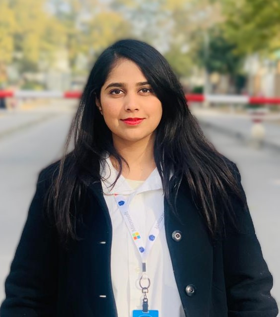

Neha Hafeez

Summary
Experienced Project Manager with a strong background in software engineering and a proven track record of delivering successful projects. Proficient in OOP, C++, C#, JAVA, and Python, with a passion for driving growth and empowerment.Skilled in leadership, problem-solving, and effective communication.Seeking opportunities to leverage my expertise and leadership abilities to drive project success and organizational growth.
Education
Bachelor's in Software Engineering
Intermediate (ICS) (Physics, Mathematics, and Computer Science)
Work Experience
Project Manager (Contract) @ Pakistan Engineering Council (PEC)
Conducted comprehensive quality assurance assessments of the PEC-E-Gateway website to ensure optimal functionality and user experience.
Led international client engagement efforts, expanding the platform's reach and impact.
Gold & EMEA Regional Lead @ Microsoft
Successfully led regional teams to meet and exceed project targets, utilizing effective project management methodologies.
Built and maintained strong client relationships, resulting in increased satisfaction and retention.
Community Associate Intern @ Portsea Games
Directed cross-functional teams in the development and execution of gaming strategies, driving performance improvement.
Coordinated project timelines and resources to ensure timely delivery of projects.
Data Analyst Intern @ Neuron's Solution
Conducted data analysis to provide actionable insights for decision-making processes.
Collaborated with team members to implement data-driven solutions to improve operational efficiency.
Education
Bachelor's in Software Engineering
Skills
Project Management
Team Leadership
Strategic Planning
Probelem Solving
Stake Holder Management
Proficiency in Programming Languages: OOP, C++, C#, JAVA, Python
Honors & Awards:
Star Student Award, Fatima Jinnah Women University
Azure Community Hero Badge, Microsoft
Google Developer Student Club Lead
Leadership & Involvement:
Founded and led MLSA Women Tech Hub, empowering women in technology.
Presented as a speaker at Microsoft Reactor events, sharing insights within the tech community.
Actively participated in the Global Azure community, contributing to the advancement of cloud technologies.
Contact Me:
I am available for opportunities and can be reached via phone or email. Let's connect and discuss how I can contribute to your projects' success.
All rights reserved by Neha Hafeez